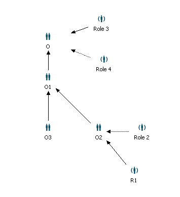

To make declarative security effective, make sure that the according service guarded property (xxxService.Guarded) is set to true (default value).
Note
It is not recommended to change this property.
Changing the value to false introduces a high risk of
executing services without having a permission and
hence might cause a severe security hole in the deployment!
In addition to implicit permissions like:
for the runtime other permissions are specified on model elements and assigned to a role or organization.
These permissions are evaluated for runtime instances of the model elements. Furthermore, read and modification permissions can be specified for model elements themselves. All permissions, even those to access model elements in the modeling environment, can be controlled by assigning users to appropriate roles through the directory service (e.g. LDAP, MS Active Directory, Stardust internal user database). Note, that permissions cannot be assigned to conditional performers.
To get an overview over permissions used in the Stardust Services API, refer to chapter Declarative Security Usage in Stardust Services API of the Programming Guide.
Also refer to chapters Setting Authorization in Model Element Property Pages in the Eclipse Modeling Guide and Setting Authorization in Model Element Properties of the Business Process Modeling Handbook respectively for details on how to set authorization in the according modeler.
The process definition property pages provide the following permissions:
| Permission | Default Participant | Description |
|---|---|---|
| Abort Process Instances | Administrator | Gives permission to abort the process instance in the Stardust Portal and via API. |
| Modify Process Instance Attributes | All | Gives permission to modify process instance attributes in the Stardust Portal and via API. |
| Modify Process Instances | Administrator | Gives permission to modify processes (e.g. priorities) in the Stardust Portal and via API. |
| Delete Process Instances | Administrator | Gives permission to delete processes through in the Stardust Portal and via API. |
| Read Process Instance Data | All |
|
| Start Process Instances | All | Gives permission to start the process instance via API and in the Stardust Portal if the participant is assigned to the according trigger. |
| Manage Event Handlers | Administrator | Gives permission to manipulate and trigger processes through Administration perspective and API. |
Interactive activities additionally can have the grant Owner, which represents the participant associated with the activity. This is useful for example to restrict the abort functionality for subprocess activities. Thus it can be avoided that subprocess activities are aborted and as a consequence the whole process is terminated.
If the activity instance is in the participant worklist of a scoped participant, the Owner grant is extended to the worklist visibilities. The participant and department of the activity will then have to match with the logged-in user in order to allow the action.
The property pages for interactive activities provide the following permissions and default participant settings:
| Permission | Default Participant | Description |
|---|---|---|
| Delegation to other users | All | Gives permission to delegate to participant, default performer and user. It also gives permission to suspend an activity through Stardust Portal and API. |
| Delegation to other departments | Administrator | Gives permission to delegate an activity to other departments through Stardust Portal and API. |
| Manage Event Handlers | All | Gives permission to manipulate and trigger the event handler. |
| Modify Activity Instance Attributes | All | Gives permission to modify activity instance attributes in the Stardust Portal and via API. |
| Read Activity Instance Data | All |
|
| Abort Activity Instances | Owner | Gives permission to abort an activity instance through Stardust Portal and API. |
Please note that additionally to the participant given the permission for aborting activity instances, the administrator always has the right to abort.
The entitlement Delegation to other departments allows the user to delegate work from one department to another.
To determine if an activity delegation succeeds with the "Delegation to other users" permission, or requires the "Delegation to other departments" permission, depends on the following cases. In case the input for delegation is:
then the delegation permissions needed are:
The activity property pages provide the following permissions:
| Permission | Default Participant | Description |
|---|---|---|
| Delegation to other users | All | Gives permission to delegate to participant, default performer and user. It also gives permission to suspend an activity through Stardust Portal and API. |
| Delegation to other departments | Administrator | Gives permission to delegate an activity to other departments through Stardust Portal and API. |
| Manage Event Handlers | All | Gives permission to manipulate and trigger the event handler. |
| Modify Activity Instance Attributes | All | Gives permission to modify activity instance attributes in the Stardust Portal and via API. |
| Read Activity Instance Data | All |
|
| Abort Activity Instances | Administrator | Gives permission to abort an activity instance through Stardust Portal and API. |
The data property pages provide the following permissions:
| Permission | Default Participant | Description |
|---|---|---|
| Read Data Values | All | Gives permission to get direct data access used in the Reporting runtime Data Value View. |
| Modify Data Values | All | Gives permission to modify data values using API. |
In case a declarative security grant is modeled for an organization, it is implicitly granted for all users having grants for one or more roles or organizations with the following properties:
For example in the following organizational structure, whenever a declarative security grant is modeled for the organization O1, it will implicitly be granted for all users having grants for organization O3, O2 and the roles Role 2 and R1.

Figure: Example Organizational Structure
The effect of authorization set for scoped participants depends on the model element:
If a grant is given to a scoped participant for a data element, then all users assigned to this participant do have execution permission. The department is not taken into account.
Each activity instance stores the department information. Thus, it depends on the concrete activity instance, if a user has execution permission. In that case, the grant including the department has to match the grant permission and the department of the activity instance.
Department information is not stored in the process instance. Instead, the relevant process data defining the department is evaluated on demand.
For example, a process definition permission is granted to a role Role 1. This role is a scoped role with scope data Data 1 defining the department. If the value of Data 1 is executed for a specific process instance, the department required to get the execution permission is evaluated.
Please refer to chapter Setting Application Permissions of chapter Securing the Stardust Engine in the Operation Guide for information on how to use service operations provided by Stardust to set permissions.
The permissions will be evaluated at modeling and runtime and will be granted or rejected according to the following two categories:
Permissions for logged-in users can be retrieved at runtime for all services via the following specific service operation:
List getPermissions()
These permissions might be used to control for example enabling or disabling of GUI controls. Please refer to the chapter Retrieving and Using Permission States of the Programming Guide for detailed information on permission retrieval via API.
Declarative grant default values are configurable at runtime by setting the following configuration parameters in your server-side carnot.properties file:
This allows to overwrite the default values (empty value, OWNER) of the declarative grants for activity instance abortion and process instance abortion respectively. As values you can set the ID of a role or organization pertaining to the process model or a predefined meta role like ALL or OWNER. The value can contain a comma-separated list. Note that no white spaces like spaces or tabs are allowed between the listed items.
For example, setting
StardustBpm.Engine.Authorization.DefaultPermissions.ActivityInstance.Abort = Engineer,Developer
will change the grant of the Abort Activity Instance to the roles with ID Engineer and Developer.
Setting
StardustBpm.Engine.Authorization.DefaultPermissions.ProcessInstance.Abort = ALL
would change the grant of Abort Process Instance to all model roles and organizations.